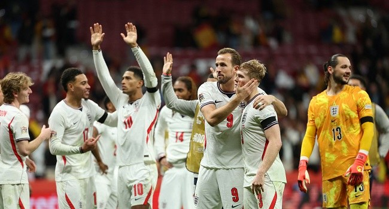

England End Spain’s 44-Game Unbeaten Run With Nations League Win

England defeated Spain 3-2 in Madrid on Sunday, ending the world champions’ 44-game unbeaten run in competitive matches and securing top spot in Nations League group A3. Both teams had already qualified to progress, but England’s group-winning position means the side will be seeded for the quarter-finals in March.
Harry Kane opened the scoring with a penalty just before half-time after Spain defender Pau Cubarsi brought him down in the area. England extended their lead soon after the break: Ezri Konsa headed in from Declan Rice’s corner in the 53rd minute, then Ben White finished a move involving Kane and Jude Bellingham four minutes later.
Spain responded after Elliot Anderson was sent off for fouling Lamine Yamal in the area. Mikel Oyarzabal converted the resulting penalty, and Nico Williams reduced the deficit further after receiving a pass from Yamal. His shot struck the post before going in.
Spain pressed for an equaliser, but England held on. Goalkeeper James Trafford made saves from Yamal and Marc Cucurella as the hosts tried to complete their comeback. The defeat was Spain’s first in a competitive match since March 2023, when their current unbeaten sequence began.
Source: Channels TV